Learning outcomes
By the end of Chapter 2 you should be able to do each of these. The tag shows where it is covered.
- 2.1Describe how the ideas behind plate tectonics started with Alfred Wegener's hypothesis of continental drift.
- 2.2Describe the physical and chemical layers of the Earth and how they affect plate movement.
- 2.2.3Explain how movement at the three types of plate boundaries causes earthquakes, volcanoes, and mountain building.
- 2.3Identify convergent boundaries, including subduction and collisions, as places where plates come together.
- 2.4Identify divergent boundaries, including rifts and mid-ocean ridges, as places where plates separate.
- 2.5Explain transform boundaries as places where adjacent plates shear past each other.
- 2.6Describe the Wilson Cycle: continental rifting, ocean basin creation, plate subduction, and ocean basin closure.
- 2.7Explain how the tracks of hotspots (places with continually rising magma) are used to calculate plate motion.
How to use this guide
Underlined words are key terms. Click one, or open Key terms at the bottom right, to read and search every definition from this chapter. The animated diagrams stop moving if your device is set to reduce motion.
2.0A revolution in geology
Some ideas force scientists to re-examine an entire field, a . Biology had Darwin's On the Origin of Species (1859), Mendel's genetics (1866), and the structure of DNA by Watson, Crick, and Franklin (1953); physics had Einstein's relativity and quantum mechanics. For geology, the revolution was : the theory that the movement of massive sections of Earth's outer layers creates earthquakes, mountains, and volcanoes. Many Earth processes make more sense through this lens, which is why the textbook covers it first.

2.1Alfred Wegener's continental drift hypothesis
Alfred Wegener (1880–1930) was a German scientist who specialized in meteorology and climatology. In 1910 he disagreed with the accepted explanation that the Bering Land Bridge formed by and that similar land bridges once connected the continents. After reviewing the literature, he published the hypothesis of : the continents were originally connected and then drifted apart. He did not have a precise mechanism, but he backed the idea with a long list of evidence.
2.1.1 Early evidence for continental drift
Fit of the continents. People noticed that the coastlines of South America and Africa match on the first world maps, and Antonio Snider-Pellegrini did early work on continental separation and matching fossils in 1858. What Wegener did differently was synthesize a large amount of data in one place, and he fitted the true edges of the continents, the , instead of today's coastlines. This gave a better fit.
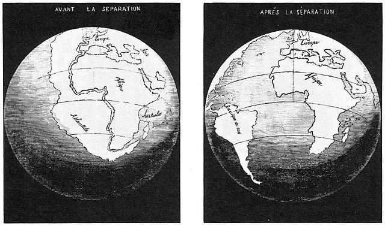
Fossils, rocks, and mountains. Wegener compared similar rocks, mountains, fossils, and glacial formations across oceans. Fossils of Mesosaurus, a primitive aquatic reptile, occur on the coasts of both Africa and South America. Fossils of the reptile Lystrosaurus are found in Africa, India, and Antarctica. These were land-dwelling creatures that could not have swum across an ocean.
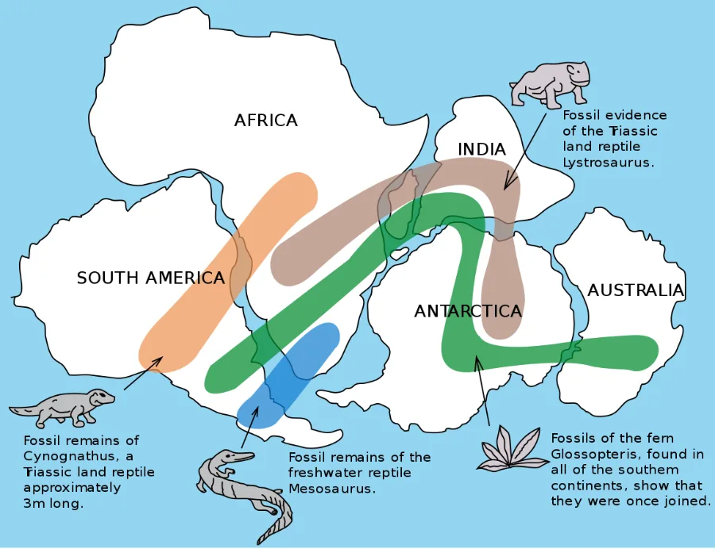
The land-bridge objection. Opponents said trans-oceanic let plants and animals cross, then eroded away. The problem: a land bridge tall and long enough to span a broad, deep ocean is improbable.
Climate evidence. Glaciers once existed in normally very warm areas (southern Africa, India, Australia, Arabia), and Wegener found tropical plant fossils inside the Arctic Circle. Land bridges cannot explain these climate anomalies. Moving continents best fit all the climate, rock, and fossil observations.
| Evidence | Observation | Why drift explains it |
|---|---|---|
| Continental fit | South America and Africa match, best along the continental shelves. | They were once one landmass. |
| Fossils | Mesosaurus in Africa and South America; Lystrosaurus in Africa, India, Antarctica. | Land animals could not swim across oceans. |
| Rocks and mountains | Similar rocks and mountain belts on opposite sides of oceans. | The belts were continuous before the split. |
| Climate (glacial) | Glacial deposits in warm southern Africa, India, Australia, Arabia. | These lands were once near the pole. |
| Climate (tropical) | Tropical plant fossils in the Arctic Circle. | That land was once in a warm climate. |
2.1.2 The missing mechanism
Wegener's idea was treated as fringe science for his whole life. Its biggest flaw was that it gave no credible mechanism for how continents move, and changing the conservative scientific community needed exceptional evidence. Other supporters invoked Earth's expansion, contraction, or even the Moon's origin. Wegener used centrifugal forces and , a model later proven wrong. He also speculated about seafloor spreading with hints of convection but could not substantiate it. Today we know , along with gravity and density, is one of the major forces driving plates.
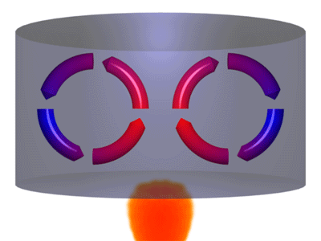
2.1.3 From continental drift to plate tectonic theory
Wegener died in 1930 on an expedition in Greenland. In the 1950s new evidence began to arrive, and by the 1960s scientists had found the missing mechanism, , so continental drift was accepted as the theory of plate tectonics. Ongoing GPS and earthquake data still support it.
- Snider-Pellegrini maps the continents fitted together.
- Wegener questions the land-bridge explanation and begins building his drift hypothesis.
- Wegener dies in Greenland; drift is still fringe science.
- SONAR mapping of the mid-Atlantic begins; Heezen and Tharp map the Mid-Atlantic Ridge.
- Harry Hess proposes seafloor spreading.
- Magnetic reversal stripes are used to support seafloor spreading.
- Enough evidence: drift is accepted as plate tectonics. J. Tuzo Wilson ties it together.
Mapping the ocean floors
From 1947, researchers used an adaptation of to map the middle of the Atlantic. Bruce Heezen and Marie Tharp made the first detailed ocean-floor map, revealing the : a basaltic mountain range running the length of the Atlantic, with rock chemistry and dimensions unlike continental mountains. In 1959 Harry Hess proposed seafloor spreading: mid-ocean ridges are "plate factories" where new oceanic plate issues from long volcanic ridges. Transform faults perpendicular to the ridges were later added to explain different rates of movement, and earthquake epicenters along the ridges linked earthquakes to plate motion.
Seafloor sediment gave another clue. Sediment was thinner than expected, and the thinnest layers were close to the ridges. That means the ridges are younger than the surrounding seafloor, so the seafloor is not fixed in place.
Paleomagnetism
is the study of magnetic fields frozen in rocks, basically a fossilized compass, and it gave the first hard evidence for plate motion. Igneous rocks with magnetic minerals such as are most useful: while the rock is liquid (magma or lava), the minerals align with Earth's magnetic field; when it cools, the alignment is frozen in. The record includes (related to latitude) and (related to magnetic north).
Scientists had long seen striped magnetic anomalies in symmetrical rows on both sides of mid-ocean ridges, with polarity reversed in alternating rows. By 1963 Hess and others used these reversals to support seafloor spreading (see also Lawrence W. Morley; details in Section 2.4.2). Rock magnetism on land also pointed far from today's magnetic north; adding continental movement explained the data better than pole movement alone.
Wadati-Benioff zones
Other researchers linked ocean trenches and island arcs to earthquakes. Earthquake epicenters traced the shapes of oceanic plates sinking into the mantle, in planes that start near trenches and angle beneath continents and island arcs. These deep earthquake zones are called .
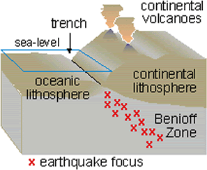
J. Tuzo Wilson
With evidence mounting, J. Tuzo Wilson was the first to put the whole picture together by proposing the opening and closing of ocean basins (Section 2.6). Others soon modeled plates moving relative to each other with clear boundaries, and the plate tectonic revolution took hold.
Check yourself: Section 2.1 quiz in the textbook ↗
2.2Layers of the Earth
Direct information about Earth's interior is very limited. Most of what we know comes from models, data, and meteorites. Earth can be divided two ways: by chemical composition and by physical behavior.
2.2.1 Chemical layers
Two major factors, temperature and pressure, create three distinct chemical layers.
Crust
The is the outermost chemical layer. has relatively low density and a composition like granite. has relatively high density (especially when cold and old) and a composition like basalt. The upper crust is (like glass or pottery, it breaks under force, especially force applied quickly), so most earthquakes happen there. The deeper crust is hotter and under more pressure, so it is (like soft plastic or putty, it moves under force).
The base of the crust is marked by a large jump in . This is the , discovered by Andrija Mohorovičić in 1909 from earthquake waves in Croatia. The change is caused by the big chemical difference between crust and mantle. The Moho is roughly 5 km below the ocean floor and 30–40 km below continents; near large mountain-building events () its depth is doubled.
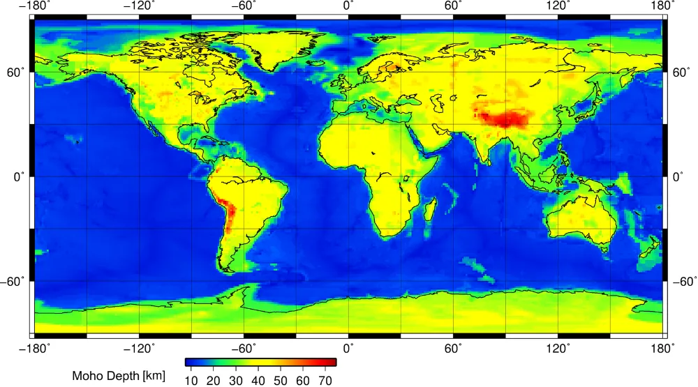
Mantle
The lies between the crust and the core, down to about 2,900 km, and is the largest chemical layer by volume. Most of what we know comes from seismic waves, plus two kinds of samples: (pieces of mantle that rose through the crust and are exposed as part of the ocean floor) and (pieces carried up in magma by eruptions). Most xenoliths are , an ultramafic igneous rock, so scientists hypothesize most of the mantle is peridotite.
Core
The has liquid and solid layers and is mostly iron and nickel, possibly with some oxygen. It was first detected in seismic data in 1906. Meteorites typically contain more iron than surface rocks, and scientists propose Earth formed from meteoric material; the iron and nickel sank to the center, where the liquid part of the core formed.
2.2.2 Physical layers
Earth can also be split into five physical layers by how each responds to stress. The two systems overlap (both share the core–mantle boundary) but differ in important ways.
Lithosphere
The (Greek lithos, stone) is the outermost physical layer. Oceanic lithosphere is thin and relatively rigid: nearly zero thickness at mid-ocean ridges, averaging 140 km elsewhere. Continental lithosphere is thicker (40–280 km) and more plastic, especially deep down. The lithosphere is broken into . A is where two plates meet and move relative to each other; that is where we see mountain building, earthquakes, and volcanoes.
Asthenosphere
The (astheno-, lacking strength) lies below the lithosphere. It is mechanically weak, so it moves and flows by convection currents driven by heat from the core. Unlike the lithosphere it is relatively unbroken (shown by seismic waves). Its depth depends on temperature: it is closer to the surface at mid-ocean ridges and much deeper under mountains and plate centers.
Mesosphere
The , sometimes called the lower mantle, is more rigid and immobile than the asthenosphere. Its upper part is a (about 410 to 660 km) where very high pressure and temperature make minerals continuously change into other forms; seismologists detect it by changes in seismic velocity. Below the transition zone the mesosphere is fairly uniform down to the core.
Outer and inner core
The is the only entirely liquid layer, from 2,890 to 5,150 km deep (about 2,300 km thick). In 1936 Danish geophysicist Inge Lehmann used seismic data to prove a solid exists inside it; the inner core is about 1,220 km thick. The hottest part of Earth is solid because immense pressure keeps it solid. It grows slowly as the lower outer core solidifies while heat escapes outward.
Circulation of molten iron and nickel in the outer core is believed to generate Earth's , which protects the atmosphere and water. If the outer core stopped circulating or froze, Earth would be stripped of life-supporting gases and water, as happened (and is still happening) on Mars.
| System | Layer | Depth or thickness | Key property |
|---|---|---|---|
| Chemical | Crust | to the Moho: ~5 km (ocean), 30–40 km (continent) | Granite-like (continental) or basalt-like (oceanic) |
| Mantle | to ~2,900 km | Largest by volume; mostly peridotite | |
| Core | below ~2,900 km | Iron and nickel (maybe oxygen) | |
| Physical | Lithosphere | oceanic 0–140 km avg.; continental 40–280 km | Rigid; broken into plates |
| Asthenosphere | below the lithosphere; depth varies with temperature | Weak; flows by convection | |
| Mesosphere | transition zone ~410–660 km, then to the core | Rigid lower mantle | |
| Outer core | 2,890–5,150 km (~2,300 km thick) | Only fully liquid layer; makes the magnetic field | |
| Inner core | ~1,220 km thick | Solid because of pressure (Lehmann, 1936) |
2.2.3 Plate tectonic boundaries
At a the plates don't move relative to each other: continental lithosphere grades into oceanic lithosphere on the same plate (e.g. the eastern coasts of North and South America). An is where oceanic and continental plates meet and move relative to each other (e.g. the western coasts of the Americas), driven by frictional drag between plates and differences in plate density. Most mountain building, earthquakes, and active volcanism happen at active margins.

In a simplified model there are three kinds of boundary: (plates move toward each other), (plates move apart), and (plates slide past each other).

Check yourself: Section 2.2 quiz in the textbook ↗
2.3Convergent boundaries
, also called destructive boundaries, are where two or more plates move toward each other. What happens depends on density. Continental lithosphere is less dense and more buoyant than the asthenosphere. Oceanic lithosphere is denser than continental lithosphere and, when old and cold, may be denser than the asthenosphere.
- Subduction: plates of different density meet and the denser plate is pushed beneath the more buoyant one.
- Collision: continental plates converge without subduction.
2.3.1 Subduction
happens when a dense oceanic plate meets a more buoyant plate (continental, or warmer and younger oceanic) and descends into the mantle. The chapter gives a worldwide average rate of 25 miles per million years. The descending plate pulls the seafloor down into a , which can be more than twice as deep as the nearby ocean basin (usually 3–4 km); the Mariana Trench approaches 11 km.
Accretionary wedge and terranes
In the trench, seafloor sediments are scraped off and squeezed between the plates into an (also called a mélange or accretionary prism). Fragments of continental material, including microcontinents, riding on the subducting plate may be sutured to the wedge and build a large area of land called a . Vast parts of California are accreted terranes.
Flux melting and volcanic arcs
As the subducting sinks, heat and pressure drive volatiles (water, carbon dioxide) out of hydrated minerals and into the , the area above the slab and below the overriding plate. The volatiles lower the melting point of the mantle wedge, which melts by . The buoyant magma rises and erupts, often forming a curved chain of volcanoes, a (curved because Earth is curved). Arcs can form on oceanic or continental plates.
Subduction in four steps
- Dense oceanic slab sinks at the trench; sediment piles into the accretionary wedge.
- Heat and pressure release water and CO2 from the slab into the mantle wedge.
- The volatiles lower the melting point: flux melting makes magma.
- Buoyant magma rises and builds a volcanic arc on the overriding plate.
How subduction starts (still debated)
It is generally accepted that subduction zones start as passive margins, and gravity then turns them into active margins. Hypotheses: gravity pulls the denser oceanic plate down, or the plate flows ductilely at a low angle. Evidence suggests a new subduction zone may be forming off Portugal, and some scientists link large earthquakes such as the 1755 Lisbon earthquake to this, though the evidence is not definitive. Another hypothesis has subduction starting at transform boundaries between plates of different density. Some margins look like they should subduct but don't: the dense oceanic plates on either side of the Atlantic are not sinking, possibly because the bond to the continental plate is stronger than the pull from the density difference.
Megathrust earthquakes and tsunamis
Subduction zones have the largest earthquakes and tsunamis; they are the only places with fault surfaces big enough for magnitude-9 earthquakes, which are also very deep. When a slab gets stuck, energy builds up; if it is not released gradually, the plates can suddenly slip along several hundred kilometers. Because these faults are under the ocean, the movement can cause giant tsunamis, such as after the 2004 Indian Ocean and 2011 Tōhoku (Japan) earthquakes.
Forearc, backarc, and back-arc faulting

- Every subduction zone has a on the overriding plate, between the volcanic arc and the trench, with much faulting and deformation (especially in the accretionary wedge).
- In some, tension creates a behind the arc. One proposed cause is : the slab rolls back instead of sliding straight under, pulling the overriding plate seaward and stretching it "like pizza dough" until it cracks and collapses. A deep, extensive backarc basin can become a continental rift.
- Where many young, buoyant oceanic plates subduct fast, the overriding plate can buckle and crack: . Extensional back-arc faults pull rocks apart; compressional ones, , push them together. The Andes have two spines: the western one is a volcanic arc, and thrust faults deformed the non-volcanic eastern one.
| Style | What deforms | Example |
|---|---|---|
| Thin-skinned | Superficial rocks lying on top of the continental plate | Sevier Orogeny (Cretaceous Period) |
| Thick-skinned | Faults reach deeper into the crust | Laramide Orogeny (near the end of and slightly after the Sevier, same region) |

Flat-slab subduction
caused the Laramide Orogeny. A low-angle slab touches more of the overriding plate than usual and deforms it many kilometers away from the subduction zone.
Oceanic-continental vs. oceanic-oceanic subduction
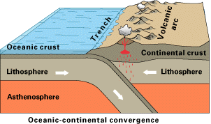
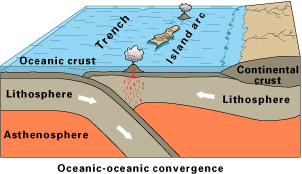
| Oceanic-continental | Oceanic-oceanic | |
|---|---|---|
| Which plate sinks | The oceanic plate | Usually the older plate (colder, denser) |
| Features | Trench, mantle wedge, often a continental volcanic arc | Trench; volcanoes may stay underwater, or rise to form an |
| Examples | Cascade Mountains (Pacific Northwest); western Andes | Aleutian Islands; Lesser Antilles; island chains of the western Pacific |
2.3.2 Collisions
When continental plates converge (for example, as an ocean basin closes), neither is dense enough to subduct. The two masses slam together in a . With no subduction there is no magma and almost no volcanism. Collision zones have tall, non-volcanic mountains and a broad zone of frequent, large earthquakes. Continental lithosphere is plastic, so deformation is spread out: collision earthquakes can occur hundreds of kilometers from the boundary, unlike the narrow band at subduction zones. Examples across Eurasia: the Pyrenees (Iberia into France), the Alps (Italy to central Europe), the Zagros (Arabia to Iran), and the Himalaya (India to central Asia).

Supercontinents
When oceanic crust joined to a continent by a passive margin fully subducts, the ocean closes and continental collision begins. Continents eventually join into a . Collision built , the supercontinent at the heart of Wegener's hypothesis. Continents have repeatedly gathered into supercontinents and split apart throughout Earth's history, the , roughly every 500 million years. Pangea began separating about 200 million years ago; an earlier supercontinent, Rodinia, existed 1.1 billion years ago and began breaking apart 800 to 600 million years ago.
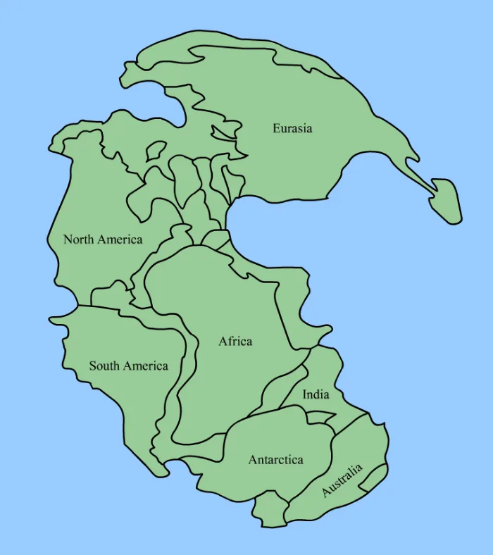
Foreland basins, obduction, and ophiolites
- A forms near a mountain belt as the mountains' weight presses a depression into the plate. They can form at subduction zones but are most common at collisions. The Persian Gulf, made by the weight of the Zagros Mountains, is possibly the best modern example.
- A plate carrying both oceanic and continental lithosphere can partly subduct, but buoyancy stops it. In very rare cases part of a continental plate is trapped beneath a descending oceanic plate: . The buoyant continental crust returns to the surface fairly quickly, bringing bits of mantle and ocean floor up onto the continent. These rocks are ophiolites, which reveal the composition of the mantle.
Check yourself: Section 2.3 quiz in the textbook ↗
2.4Divergent boundaries
At , also called constructive boundaries, plates move away from each other. There are two types: continental rift zones (in weak spots of continental plates) and mid-ocean ridges. A mid-ocean ridge usually begins as a continental rift that splits the plate apart; seawater fills the gap and the pieces drift apart into separate continents. This is .
2.4.1 Continental rifting
Where continental plates are very thick, they reflect so much heat back into the mantle that strong convection pushes super-heated mantle up against the plate and softens it. Tension from this upwelling pulls the weakened plate apart. It thins and develops deep cracks called . Blocks between large faults drop into , containing keystone-shaped down-dropped blocks called ; the raised shoulders are . If only one side of a block drops, it is a . Rifts can grow into large lakes and even oceans.

Rifting is not random. Two factors control it:
- It does not occur in the old, stable interiors of continents, called .
- When it does occur, the break-up resembles the seams of a soccer ball (a truncated icosahedron), the most common fracture pattern on an evenly expanding sphere because it uses the least energy.
Rifting tends to grow along one seam and fizzle out along others. Those inactive seams are ; they stay weak spots and may develop into an . Example: the Mississippi Valley Embayment, the depression the upper Mississippi River flows through. Where the arms don't fail, as in the Afar Triangle, three divergent boundaries meet in a .
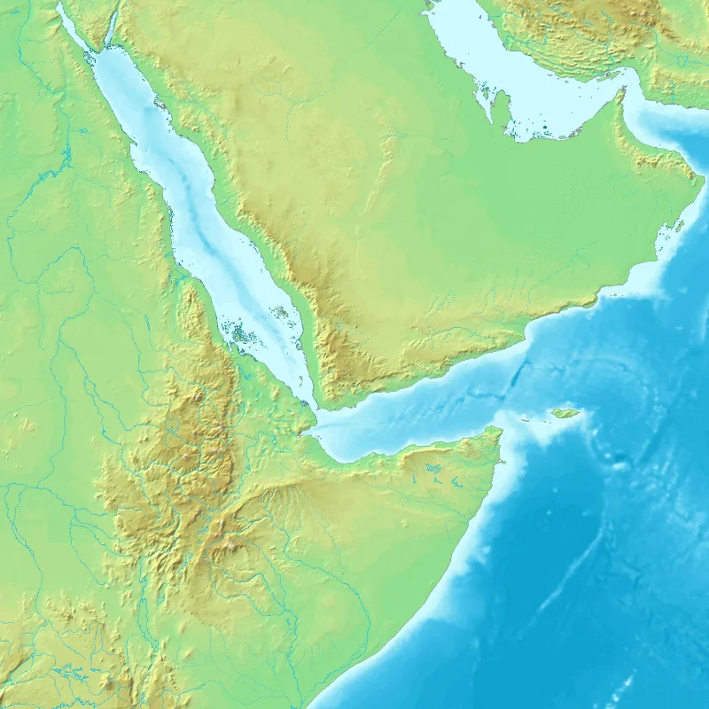
| Type | Character | Examples |
|---|---|---|
| Narrow rift | High density of highly active divergent boundaries | East African Rift Zone (the Horn of Africa pulling away); Lake Baikal, Russia |
| Broad rift | Many fault zones spread over a wide area of deformation | Basin and Range (western U.S.); the Wasatch Fault forms its eastern boundary in Utah |
Rifts have earthquakes (smaller and less frequent than at other boundaries) and may have volcanism. Unlike flux-melted subduction magma, rift magma forms by : pulling plates apart lowers the pressure, which melts material and draws it upward through the faulted rift. Young rift volcanoes dot the Basin and Range. Ol Doinyo Lengai in Tanzania erupts unusual lava made largely of , a relatively cold, liquid carbonate.
2.4.2 Mid-ocean ridges
As rifting continues, the continental lithosphere becomes more mafic and thinner until the plate under the rift becomes oceanic lithosphere. A new ocean is born, as the narrow Red Sea formed when Arabia moved away from Africa. As it keeps diverging, a forms.

Mid-ocean ridges, also called :
- are the only places on Earth that create new oceanic lithosphere: decompression melting turns asthenosphere into new lithosphere that oozes up through cracks;
- produce more lava than all other types of volcanism combined, though most of it is unmapped on the deep seafloor (Iceland is a rare place where this kind of rift is seen on land);
- stand high because hot new lithosphere is lighter than the asthenosphere below; this isostatically buoyant rock floats partly exposed, like an ice cube in water.
As the lithosphere moves away from the ridge it cools, becomes denser, and settles into wide, low, featureless . So the oldest seafloor should be farthest from ridges, and rock ages confirm it. Sediment is also thinner near ridges because it has had less time to build up.
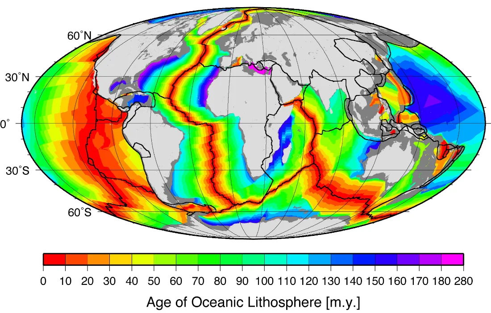
Magnetic striping
The explains the symmetrical magnetic stripes: Earth's magnetic field is imprinted into new rock as it forms at the ridge. Very hot magma has no magnetic field; as the plates pull apart, it cools below the , the temperature below which a magnetic field gets locked into magnetic minerals. The stripes alternate because Earth's north and south magnetic poles periodically swap (). This pattern is used to reconstruct past plate motion and measure spreading rates.
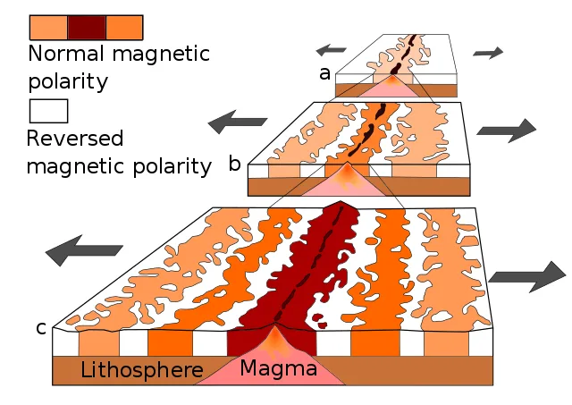
Hydrothermal vents and life without sunlight
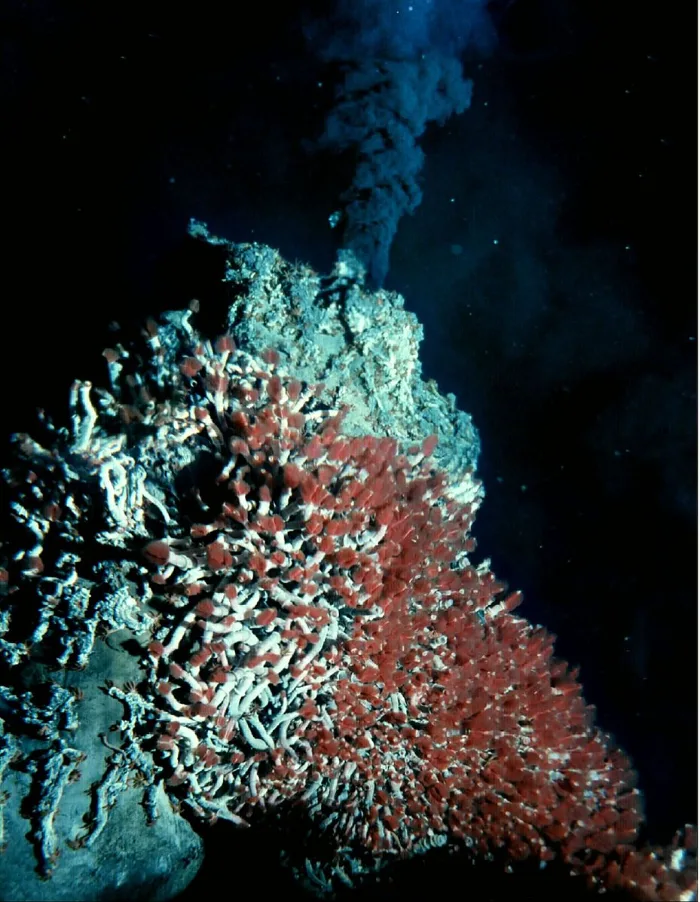
Black smokers
Ridges are studded with : deep fissures where seawater circulates through hot rock and rises again carrying dissolved gases, minerals, and particles, like black underwater smoke. In 1977 scientists in the submersible Alvin found thriving communities there, including tube worms taller than people, living in total darkness. They rely on geothermal energy and bacterial of sulfur compounds. Before this, scientists thought all life needed photosynthesis. Some suggest such vents could be where life began, and might host life elsewhere, such as on Jupiter's moon Europa.
Check yourself: Section 2.4 quiz in the textbook ↗
2.5Transform boundaries
At a (also called a strike-slip or conservative boundary), plates slide past each other horizontally. Motion is described by an observer standing on one plate looking across at the other:
- (right-lateral): the opposite plate moves to the right.
- (left-lateral): the opposite plate moves to the left.
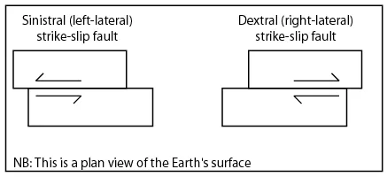
Most transform boundaries are on the ocean floor around mid-ocean ridges. They form aseismic of earthquake-free transform faults that accommodate different spreading rates along the ridge. Others produce significant earthquakes but little mountain building or volcanism: if the plates cannot shear past each other, stress builds up and is released suddenly as an earthquake. The most significant for people are within continents, with moderate-to-large earthquakes: the San Andreas Fault (California), North and East Anatolian Faults (Turkey), Altyn Tagh Fault (central Asia), and Alpine Fault (New Zealand).
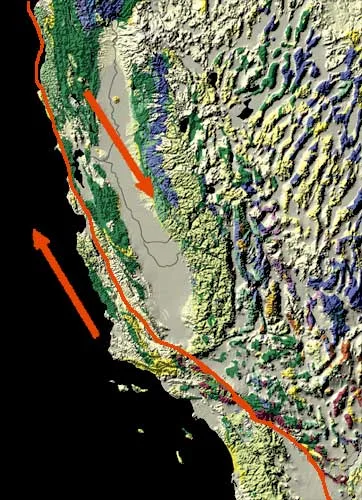
2.5.1 Transpression and transtension
Bends in a transform fault add compression or extension and cause secondary faulting.
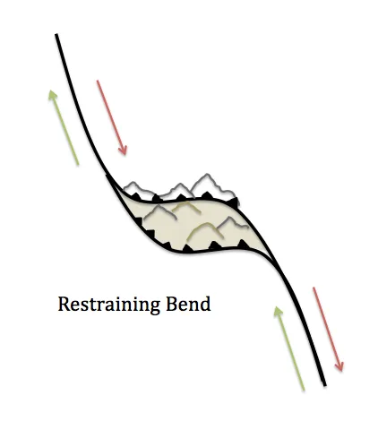
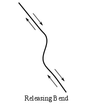
| Transpression | Transtension | |
|---|---|---|
| Extra force | : compression added to shearing | : extension added to shearing |
| Kind of bend | : plates restricted from sliding past | : plates pulled apart |
| Result | Mountains built (and moved, even rotated) | Depressions (basins), sometimes volcanism |
| Examples | Big Bend, southern San Andreas Fault | Dead Sea (Israel–Jordan); Salton Sea (California) |
2.5.2 Piercing points
A is a geological feature cut by a fault. Matching the two separated parts (best if they have a unique pattern) shows how far the fault has moved. They work especially well on transform faults, because horizontal motion keeps features fairly intact; normal and reverse faults tend to obscure or destroy them. Piercing points show the San Andreas Fault has moved over 225 km in the last 20 million years, along three different fault traces.
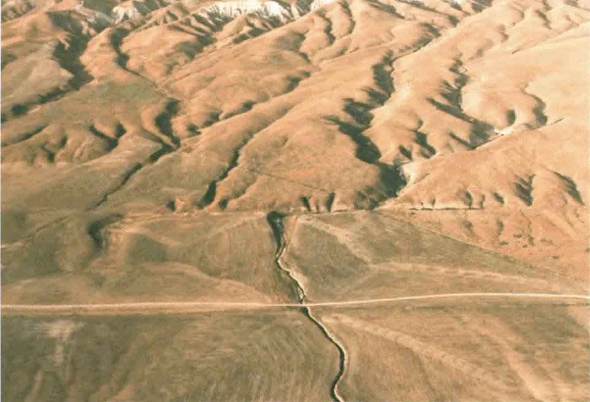
Check yourself: Section 2.5 quiz in the textbook ↗
2.6The Wilson Cycle
The , named for J. Tuzo Wilson, who first described it in 1966, describes the repeated assembly and breakup of supercontinents such as Pangea and Rodinia. It has operated for at least three billion years, possibly longer.

Why rifting starts: one proposed mechanism is that continental plates reflect heat much better than oceanic plates. When continents gather together, they reflect more heat back into the mantle, making convection more vigorous and starting rifting. Some geologists think are remnants of these times of hotter mantle and upwelling.
What keeps plates moving is still largely a mystery. Three schools of thought:
| Hypothesis | Idea | Support |
|---|---|---|
| After rifting, mid-ocean spreading centers and their convection push plates apart. | Less | |
| Descending slabs in subduction zones pull the plates. | Best supported by current evidence | |
| Gravity pulls plates down from the elevated ridges across the asthenosphere. | Less |
2.7Hotspots
To measure plate motion more precisely, scientists study . First proposed by J. Tuzo Wilson in 1963, a hotspot is an area where magma breaks through the plate to make a volcanic center (islands at sea, mountains on land). As the plate moves over the hotspot, the volcano moves off its magma source and dies, and magma breaks through elsewhere to build a new one. A moving plate over a stationary hotspot leaves a chain of islands or mountains. Classically hotspots do not move, though recent evidence suggests exceptions.

Measuring plate motion with a hotspot track
Hotspots are the only volcanism not tied to subduction or rifting at plate boundaries. Because the hotspot stays put, the chain records the plate's path: the age of the eruptions and the shape of the chain give the rate and direction of plate movement relative to the hotspot.
Rate = distance between two volcanoes ÷ difference in their ages. The direction points from the older volcano toward the younger one, opposite to the plate's motion.
Open questions. Where hotspot magma comes from is debated: some say super-heated material rises from as deep as the core as a mantle plume; others say it is sourced in the mantle. How hotspots start is also debated: the prevailing idea is that they begin at divergent boundaries during supercontinent rifting; subducting slabs and even large impacts from space have also been suggested. Dozens exist, including Tahiti, the Afar Triangle, Easter Island, Iceland, the Galápagos, and Samoa. The U.S. has two of the largest and best studied: Hawaii and Yellowstone.
2.7.1 Hawaiian hotspot
Hawaii is one of the most active hotspots on Earth. Evidence shows it is at least 80 million years old (probably older, but older rocks have been subducted). The Big Island sits over a large mantle plume, and Kīlauea is its main vent (the chapter says it has erupted continuously since 1983; see the fact-check notes). The chain, mostly underwater, stretches almost 6,000 km across the Pacific. Its most striking feature is a sharp 60° bend at the midpoint, marking a change in plate direction about 50 million years ago, more often linked to plate reconfiguration but also to things like plume migration. Seismic has mapped the plume toward the lower mantle, and rock ages, vegetation, and island size all show the oldest islands are farthest from the hotspot.

2.7.2 Yellowstone hotspot
Yellowstone also forms from magma rising through the lithosphere, but under a thick continental plate. Hawaii's thin oceanic plate is easily breached; at Yellowstone the thick plate is a harder barrier, so eruptions are generally much more violent but less frequent. Over 15 million years of eruptions have carved a curved path across the western United States. It has been suggested the hotspot is connected to the older Columbia River flood basalts and even to 70-million-year-old volcanism in Canada's Yukon.

The most recent major eruption made the Yellowstone Caldera and the Lava Creek tuff about 631,000 years ago, throwing 1,000 km³ of ash and magma into the atmosphere; some ash reached as far as Mississippi. Scientists predict another eruption would also be massive, with effects far beyond the western U.S.: such fill the atmosphere with gas and ash that block sunlight, drastically altering climates and possibly affecting worldwide food production.
| Hawaii | Yellowstone | |
|---|---|---|
| Plate | Thin oceanic plate, easily breached | Thick continental plate, hard to breach |
| Eruptions | Frequent; Kīlauea is the main vent | Much more violent, less frequent |
| Track | ~6,000 km chain with a 60° bend (~50 Ma); at least 80 million years old | Curved path across the western U.S.; 15+ million years |
| Notable | Oldest islands farthest from the hotspot | Last major eruption ~631,000 years ago, 1,000 km³ of ash and magma |
Check yourself: Sections 2.6 and 2.7 quiz in the textbook ↗
Summary
Plate tectonics is a unifying theory: it explains nearly all of Earth's major geologic processes, and has guided geologists since the 1950s and 1960s. Earth's surface layer is broken into a network of solid, relatively brittle plates. Beneath them is a hotter, more ductile layer with convective upwelling driven by Earth's interior heat. These currents move the plates together, apart, and side by side. Earthquakes and volcanoes form where plates interact, except for volcanic hotspots, which are not caused by plate movement.
Quick recap
- Wegener's drift had strong evidence (fit, fossils, rocks, climate) but no mechanism; seafloor spreading supplied it in the 1960s.
- Seafloor evidence: the Mid-Atlantic Ridge, thin sediment near ridges, symmetrical magnetic stripes, Wadati-Benioff zones.
- Chemical layers: crust, mantle, core. Physical layers: lithosphere, asthenosphere, mesosphere, outer core (liquid), inner core (solid).
- Convergent: subduction (trench, flux melting, volcanic arc, biggest quakes) or collision (tall non-volcanic mountains).
- Divergent: continental rifts (normal faults, grabens, decompression melting) grow into mid-ocean ridges that make new seafloor.
- Transform: plates slide past (dextral or sinistral); bends cause transpression or transtension; piercing points measure offset.
- Wilson Cycle: rifting → new ocean → subduction → closure → collision; slab pull is the best-supported driving force.
- Hotspot tracks (Hawaii, Yellowstone) give the rate and direction of plate motion.
Check yourself: Chapter 2 review quiz in the textbook ↗
Resources
Fact-check notes
Every statement in this guide was checked against the textbook chapter. Where the chapter differs from current references or contradicts itself, the guide keeps the chapter's value (that is what you will be tested on) and notes it here.
| Topic | Chapter says | Note |
|---|---|---|
| Average subduction rate | "25 miles per million years, about a half-inch per year" | The two numbers disagree: 25 miles per million years is about 4 cm (1.6 in) per year. The guide gives only the 25 mi/Myr figure. |
| Hess and seafloor spreading | Proposed in 1959 | Hess circulated the idea around 1960 and published it in 1962 ("History of Ocean Basins", listed in the chapter's own references). |
| Mesosphere depth | "Located at a depth of approximately 410 and 660 km" | 410–660 km is the transition zone at the top of the mesosphere; the lower mantle continues from ~660 km to the core at ~2,890 km (USGS, The Interior of the Earth). The guide shows it that way. |
| Kīlauea | "Actively erupting since 1983" | The Puʻu ʻŌʻō eruption ran from 1983 to 2018; since then Kīlauea has erupted in separate episodes (USGS Hawaiian Volcano Observatory). |
| Hawaiian-Emperor bend | About 50 million years ago | Dated to about 47 million years ago (Sharp & Clague, 2006, Science 313: 1281–1284). |
| Giant tube worms | Text: "10-foot-long"; figure caption: "6'+" | The chapter is inconsistent; the guide says only "taller than people". |
| Transtension figure | Caption says it causes "a restraining bend" | A transtensional fault makes a releasing bend, as the chapter's own text says. The guide's caption uses "releasing bend". |
| Sunda megathrust figure | Caption: "2006 Mw 9.1–9.3 Indian Ocean Earthquake" | The earthquake was in 2004, as the chapter's text says (this figure is not reproduced here). |
The chapter gives the inner core as "about 1,220 km thick"; that number is its radius, since the inner core extends to Earth's center. The Earth's center depth shown in Figure 2.7 (~6,370 km) is the chapter's 5,150 km plus 1,220 km.
Credits
Content summarized from An Introduction to Geology, Chapter 2, © 2017 Chris Johnson, Matthew D. Affolter, Paul Inkenbrandt, and Cam Mosher, licensed CC BY-NC-SA 4.0. This guide is shared under the same license. Images are from the chapter and keep their own licenses, credited under each figure.
- CC BY-SA: plate boundary map (Eric Gaba), convection animation (Oni Lukos), Moho depth map (AllenMcC.), passive margin (Joshua Doubek), Pangaea (User:Kieff), ocean birth (Hannes Grobe / Lichtspielderivative), strike-slip faults (Cferrero), restraining bend (GeoAsh), releasing bend (K. Martin), Wilson Cycle (Hannes Grobe / Hardwigg).
- CC BY: black smoker (NOAA Photo Library), Yellowstone hotspot track (Kelvin Case).
- Public domain: Snider-Pellegrini map, fossil map, Wadati-Benioff zone, boundary types, forearc, subduction and collision diagrams (USGS), Laramide subduction (Melanie Moreno), horst and graben (USGS), Afar (DEMIS), seafloor age (NOAA), magnetic stripes scheme (Chmee2), San Andreas map, Wallace Creek (Robert E. Wallace), hotspot diagram (Los688), Hawaii-Emperor chain (Ingo Wölbern).
- Layers diagram, boundary-type animation, magnetic striping animation, Wilson Cycle loop, and timeline: drawn for this guide from the chapter text.
- Images marked "All Rights Reserved" in the chapter (opening photo, terrane drawing, Atwater's striping GIF) are not reproduced.